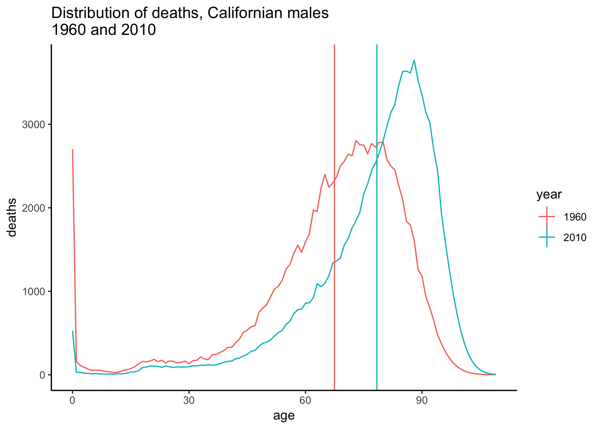
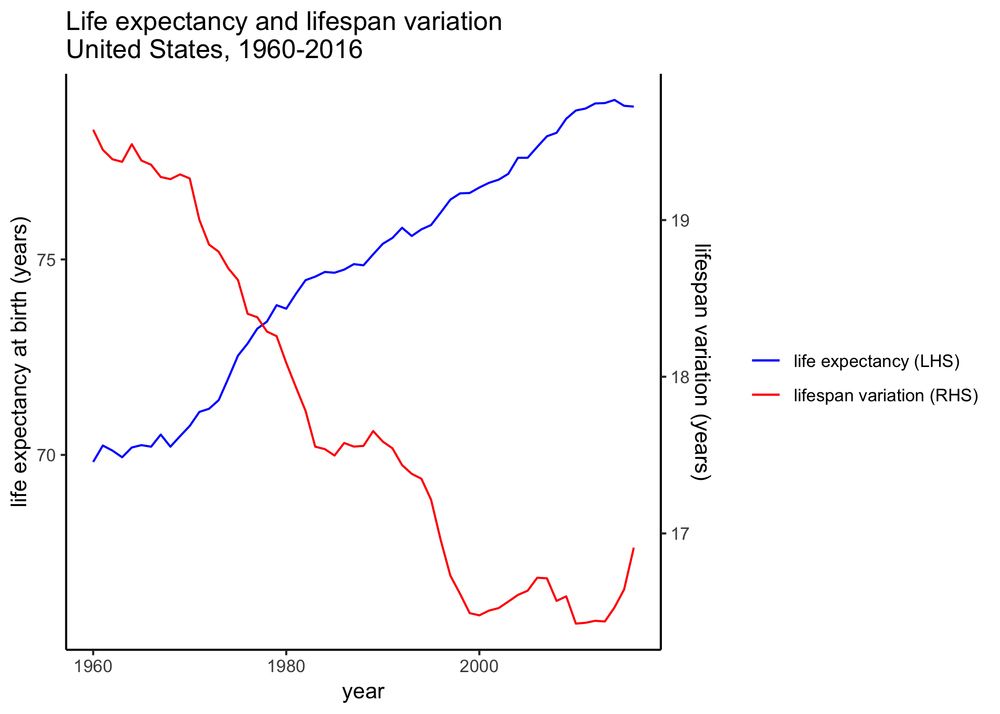
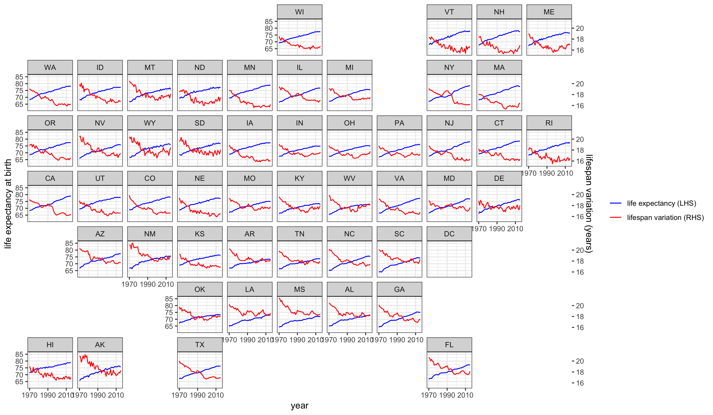
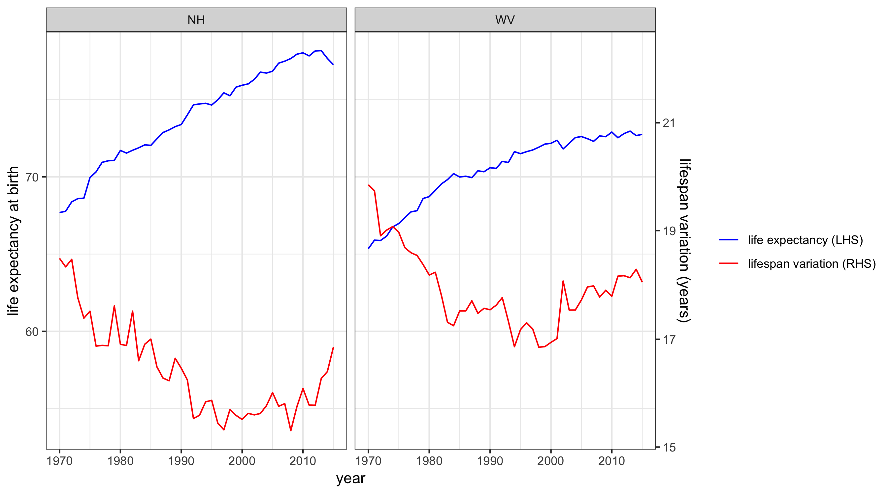
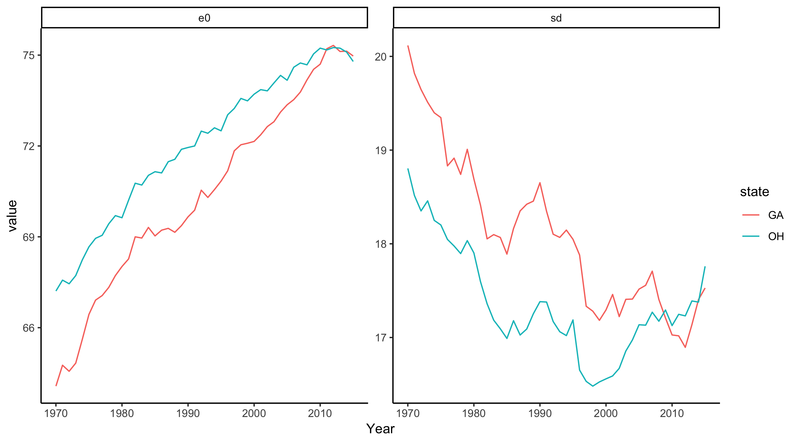

Lifespan variation as a measure of mortality progress and inequality
Introduction
This post looks at how variation in lifespan has evolved over time for different states in the US, and how this measure complements trends in life expectancy. I was inspired to write this after hearing a great talk by Alyson van Raalte last week at MPIDR and reading her latest paper on the topic.
One of the most common aggregate measure of mortality we tend to look at is life expectancy. The formal definition of (period) life expectancy at birth is the average number of years someone would live if the current age-specific mortality rates did not change in future. Given that age-specific mortality rates are generally improving over time, this isn’t really a realistic measure of longevity1, but it’s a useful way of summarizing mortality at all ages into one number.
The ‘expectancy’ part of the name comes from the fact that life expectancy is an average, or expectation. Of all the deaths that happen in a population, we are just looking at the average age at which they occur. However, there are many other ways of summarizing distributions with one number: for example, the median or mode age at death. Another such measure — lifespan variation — captures the variation in ages at death.
As an example, the figure below shows the distribution of ages at deaths for Californian males in 1960 and 2010. (These data are from the HMD US states project). Notice that the distribution has shifted to the right, which corresponds to improving mortality and increased life expectancy (as shown by the vertical lines). In addition, notice that the distribution in 2010 is not as spread out — the distribution of deaths is more concentrated around the mean age. That is, variation in lifespan has decreased from 1960 to 2010.

Increases in life expectancy are usually coupled with decreases in lifespan variation. This is due to the fact that life expectancy increases usually occur because of improvements in infant mortality (which leads to a decrease in the spike observed in the first-year mortality) and decreases in premature deaths (e.g. decreases in cardiovascular diseases). However, as van Raalte and coauthors point out, this relationship of increasing life expectancy and decreasing lifespan variation is not always the case, and recently there has been a reversal of the trend for many populations.
I’ll briefly describe one way to calculate lifespan variation and show trends by US state. Note that all data come from the HMD US states Project.
Measuring lifespan variation
There are several different ways of measuring lifespan variation. In this post, I use the standard deviation of age of death, which can be calculated from lifetable quantities as
\[ \sqrt{\sum_0^\omega \frac{\left(x - e_0 \right)^2d_x}{\sum_0^\omega d_x}} \]
where \(e_0\) is life expectancy at birth, \(d_x\) is the lifetable deaths at age \(x\) and \(\omega\) is the open age interval (110+ in the case of HMD data).
There are many other options to calculate, including: standard deviation from age 10 (which eliminates the effects of child mortality, see Edwards and Tuljapurkar); interquartile range; life disparity (\(e^\dagger\)) (e.g. see the new paper by Aburto and van Raalte). I chose standard deviation because I find it intuitive and it’s easy to calculate based on lifetable columns. However, other measures would probably show similar trends.
Lifespan variation in the US
The plot below shows life expectancy at birth and lifespan variation for the United States (data from HMD). The recent decline in life expectancy in the United States has gained a lot of attention. However, note that lifespan variation started to increase before life expectancy started to plateau/decrease.

Looking by state, life expectancy has increased everywhere, with recent evidence of plateauing and declining in some states (note that these data are only up to 2015, so the declines would be more apparent with more recent data). On the other hand, lifespan variation has generally declined, but plateaued much earlier than life expectancy. An increase in lifespan variation is apparent for some states, including some New England and Mid-West states.

For example, the plots below show life expectancy and lifespan variation for New Hampshire and West Virginia, two states that have been hardest hit by the opioid epidemic. For these states, lifespan variation has increased back up to the level it was in the 1980s-90s.

It’s also interesting to compare trends in states that have a similar life expectancy. For instance, comparing Georgia and Ohio, the latter has experienced a much more pronounced increase in lifespan in recent years.

Summary
Lifespan variation is easily calculable from lifetable quantities, and is an interesting measure of mortality progress and inequality. Even if life expectancy is increasing, the variation of lifespan could also be increasing, which suggests increased inequality in death – while a proportion of the population are dying at older ages, there is also an increased proportion dying prematurely. Increased variation in the age of death means greater uncertainty around timing of death, which has implications for how people think about their future.
All data are freely available and the code I used to generate plots etc is available on my GitHub.
Footnotes
Follow Leslie Root on Twitter for amusing rants on people misinterpreting life expectancies.↩︎